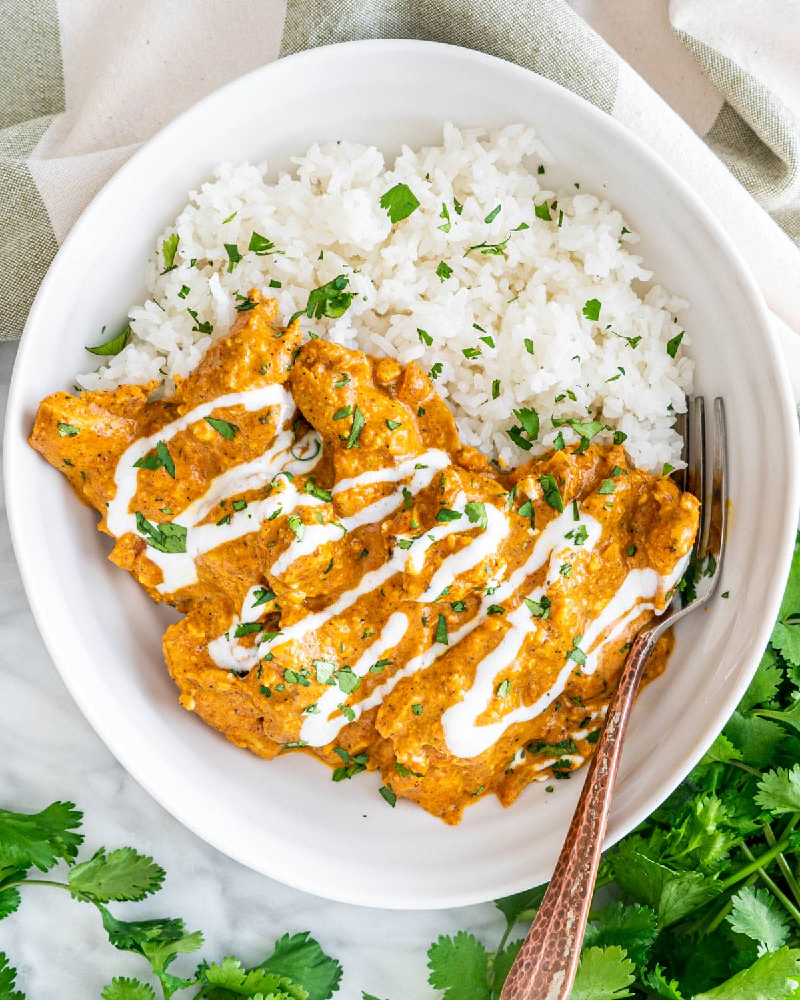

Chicken korma recipe

How to make a chicken korma
This chicken korma recipe is made with classic Indian spices and ingredients, with chicken marinated in a homemade korma paste and yogurt, then cooked quickly and simmered with cream.
Mild in heat, but big on flavor, it's a spicy food lover's dream, so creamy and comforting.
Ingredients
- 1 onion, chopped
- 2 garlic cloves, roughly chopped
- thumb-sized piece of ginger, roughly chopped
- 4 tbsp korma paste
- 4 skinless, boneless chicken breasts, cut into bite-sized pieces
- 50g ground almonds, plus extra to serve (optional)
- 4 tbsp sultanas
- 400ml chicken stock
- 1/4 tsp golden caster sugar
- 150g pot 0% fat greek yogurt
- small bunch coriander, chopped
Method
Step 1
- Put 1 chopped onion, 2 roughly chopped garlic cloves and a roughly chopped thumb-sized piece of ginger in a food processor and whizz to a paste.
Step 2
- Tip the paste into a large high-sided frying pan with 3 tbsp water and cook for 5 mins. Add 4 tbsp korma paste and cook for a further 2 mins until aromatic.
Step 3
- Stir 4 skinless, boneless chicken breasts, cut into bite-sized pieces, into the sauce. Add 50g ground almonds, 4 tbsp sultanas, 400ml chicken stock and ¼ tsp golden caster sugar.
Step 4
- Give everything a good mix, then cover and simmer for 10 mins or until the chicken is cooked through.
Step 5
- Remove the pan from the heat, stir in a 150g pot Greek yogurt and some seasoning, then scatter over a small bunch of chopped coriander and more ground almonds, if using. Serve with brown or white basmati rice.